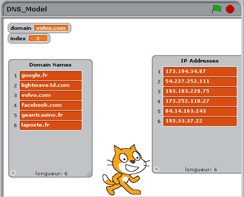
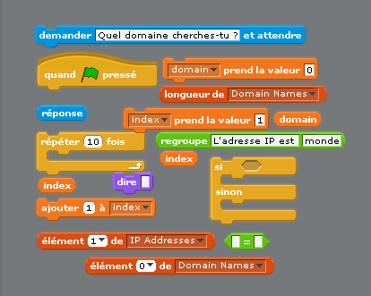
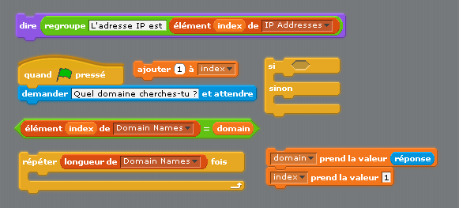
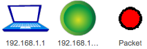
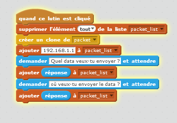

Created by Marc Scott / @coding2learn et traduit par Ben Vost pour ESAA Aquitaine
utilisant reveal.js

How The Internet Works by Marc Scott is licensed under a Creative Commons Attribution 3.0 Unported License.
Quel est la différence ?
Essayez de noter et expliquer tes idées avant de proceder.
Le plupart des gens ne savent pas ce que c'est l'Internet.
Ce mec ne sait vraiment pas, et il est senateur du gouvernement americain... (VO)

Il était quand même un tout petit peu correcte - l'Internet est un peu comme "Un série de tubes"
L'Internet est un réseau globale, connexe avec des cables en cuivre ou fibre optique, ou sans fils et avec des signaux satellite.
Tout seul, l'Internet n'est que beaucoup de matériel tres cher.

Tim Berners-Lee a inventé le Web.
Pour comprendre comment il marche, on va faire une petite exercice.
Nous allons construire notre propre site web minuscule. Il ne formerait pas parti du World Wide Web par contre, parce qu'il va être sur votre ordi et pas accessible en dehors de cela.
Première chose a faire ? Créer un nouveau dossier sur votre bureau et nom-le mon site web.
Ouvre Bloc notes ou une autre editeur de texte.
Copie et colle le suivant dans ton document
<html>
<body>
<h1>Mon Première page Web</h1>
<p>Ceci est mon Première page web. J'espere que tu l'aimeras.</p>
<img src="http://imgs.xkcd.com/comics/computer_problems.png">
<a href="secondpage.html">Lien vers mon deuxième page</a>
</body>
</html>
Enregistrer ton fichier comme
firstpage.htmlLe nom est important - assures qu'il est tout en minuscule et que le nom du fichier termine en
.html.txtMaintenant on va créer un nouveau fichier texte.
Et copie / colle le suivant dans ton fichier
<html>
<body>
<h1>Mon deuxième page web</h1>
<p>Celui est mon deuxième page web. J'espere que tu l'apprécieras autant que le premier.</p>
<img src="http://imgs.xkcd.com/comics/tech_support_cheat_sheet.png">
<a href="firstpage.html">Lien vers mon premier page</a>
<a href="http://www.google.com">Lien vers Google</a>
</body>
</html>
Enregistre ton fichier comme secondpage.html
Maintenant nous allons regarder dans le dossier que nous avons crée. Il doit avoir deux icones pour les deux fichiers que t'as crée et ils doivent sembler des icones de browser.
Double clique le fichier firstpage.html et il doit ouvrir dans un browser web.
Pour ouvrir ton fichier de nouveau dans un éditeur de texte comme Bloque Notes, clique bouton droit sur le fichier et choisi "Ouvrez avec..." et choisi ton éditeur de texte.
Si tes pages n'ont pas marché, vérifie le code encore une fois, et rassure-toi que tes fichiers sont bien nommé.
Maintenant, essaie de créer un troisième page et le linké depuis les autres pages.
Le web est un tas de documents, comme les deux ou trois que tu viens de créer qui sont tous connecté et qui sont tous stocké sur des ordinateurs partout dans le monde. Ces ordinateurs sont appellé Serveurs Web

Un browser est un logiciel que t'as installé sur ton ordi
Tu peux nommé combien depuis leurs logos ?

Les browsers prennent les langages web (html, javascript, actionscript et plein, plein d'autres) et les afficher dans un forme facile à lire et interréagir avec.
Comme exemple, voila un peu de HTML :
Et voila comment ton browser l'interprete :
Regarde le bar d'adresse qui est affiché dans ton browser. Tous ce qui est écrit là est l'URL du page que tu regarde dans le browser.
Tous ce qui est écrit là après le www mais avant le premier / est le nom de domaine du site que tu visite.
Tu dois bien connaitre des noms de domaines comme :
google.com
facebook.com
dailymotion.com
youtube.com
wikipedia.org
Les noms de domaines sont un peu comme des adresses. Par exemple, notre école est à
16 Cours du Général de Gaulle,
33170 Gradignan
FRANCE

16 Cours du Général de Gaulle,
33170 Gradignan
FRANCE
Celui, c'est faciles pour les gens de donner et souvenir. Un autre facon de dire où se trouve l'école serait :
44°47'13.04", -0°36'14.75"
Ceci est difficile pour un être humain à souvenir, mais super facile pour un ordi. Essaie de le copier/coller dans Google Maps et regarde où il te mets.
Les noms de Domaine sont comme des adresses, crée pour que les humains peuvent les lire, comprendre et souvenir. In reality a computer's address (that allows other computers on a network or the internet to find it), is made up of numbers.
Les ordinateurs utilisent les adresses IP pour envoyer les messages entre eux.
L'adresse IP actuel de ton ordi doit être mis en-dessous :
Nous avons besoins des noms de domaines car les adresses IP sont trop difficiles pour les humains à souvenir.
Imagine avoir besoin de taper
http://74.125.239.151Essaie ceux-ci aussi et noter les domaines correspondant :
1. http://193.169.66.26
2. http://212.99.36.2
3. http://72.21.210.29
Quand je tape www.google.com dans le bar d'adresses dans mon browser, il envoie un message vers les serveurs de Google demandant le page web.
Mon ordi a besoin de connaitre l'adresse IP du serveur de Google. Pour faire ça, il contacte un serveur de nom de domaine (DNS en anglais).
Ce serveur de nom de domaines est un ordinateur spéciale sur l'Internet qui gardes des tables de noms de domaine et adresses IP correspondant.
Regarde ce clip (en VO) et prends des notes
Imagine que tu devais expliquer DNS à quelqu'un qui n'avait aucune idée comment ça marche.
Utilisant n'importe quel logiciel (même stylo et papier si tu préfere), crée un produit qui t'aidera à expliquer DNS à quelqu'un. Tu peux créer une affiche, un présentation, un dissertation - c'est completement à ton choix.
Appelle-le "DNS Model"
Un DNS consiste d'un tableur un peu comme ceci :
| Domain Name | IP Address |
| google.com | 74.125.239.116 |
| bbc.co.uk | 212.58.246.90 |
Nous allons construire un table DNS au début. Ceci va être constitué de deux listes.
Crée un nouveau liste qui s'appelle Domain Names and un autre qui s'appelle IP Addresses
Au liste Domain Names ajout le nom de domaine google.fr
Au liste IP Addresses ajout l'adresse IP 173.194.34.87
Nous avons besoin de plus de noms de domaines et adresses IP pour notre table.
Va ici
Utilise ce site pour chercher des noms de domaines connus, comme facebook.com et youtube.com. Ajout-les aux listes.
Tu dois finir avec quelque-chose comme ceci.
Essaie au moins d'avoir 10 noms de domaines et leurs adresses IP correspondant.
Quand tu tapes un URL dans le bar d'adresse d'un browser web, ton ordinateur consultes le serveur DNS pour connaitre l'adresse IP.
Le serveur DNS va chercher le nom de domaine dans ses listes et trouver l'adresse IP qui correspond.
Pour cela le serveur a besoin d'un algorithme de recherche.
Dans l'image qui suit tu va voir une séance d'identification. Tu dois trouver ce figure :
Peut-être t'as choisi au hasard ? C'est un des methodes pour rechercher.
Ou, peut-être t'as commencer à un coté et continué vers l'autre ? C'est comme ça qu'un ordinateur accomplierait une recherche.
Ce methode de chercher s'appelle une recherche linéaire.
Imaginons que nous avons un liste de 'choses'
[chat,chien,cheval,souris,lapin,perroquet,éléphant]
Si nous voulons que notre ordinateur utilise un logiciel pour chercher le position de l'élément perroquet, l'ordi va chercher de gauche au droite.
Le logiciel va vérifier ce qui est à position 1, est-ce le perroquet ? Sinon, il continue à position 2, et ainsi de suite.
Dans notre logiciel Scratch nous avons un liste de noms de domaines, et un liste d'adresses IP.
On a besoin de mener une recherche linéaire sur la liste de noms de domaines afin de trouver le position d'un nom qu'on donne.
Ajouter des variables.
domainindexdomain est mis en réponse.index est mis à 1Domain Names.index du liste Domain Name = le variable domainindex du liste Adresse IPindex +1
quand DrapeauVert cliqué
demande "Quel domaine cherches-tu ?"
mets domain à réponse
mets index à 1
repete (longeur de Domain Names)
si (index de Domain Names) = domain
dit ("l'adresse IP est", index de IP Addresses)
sinon
changer index + 1
Essaie de référencer le pseudocode afin de bidouiller comment les mettre en place avant de proceder à la page suivante.
Si t'es coincé, voila quelqu'uns des blocs qui sont déja arrangé pour toi.
Essaie de completer le script avant d'aller à la page suivante.
Tu va essayer de créer ton propre logiciel de recherche linéaire maintenant.
L'Internet est un tres grand réseau, mais après tout, ce n'est qu'un réseau comme les autres.
Tu va maintenant modéliser un réseau dans Scratch qui va montrer comment les réseaux passent des messages.
Lancer Scratch et sauvegarder ton projet sous le nom "Virtual Network"
Nous avons besoin de trois choses pour débuter.
Voila ceux que j'ai utilisé mais bien sûr tu peux sélectionner, importer ou dessiner les tiens.
Nous allons nommer le lutin pour l'ordi avec un adresse IP.
Dans le pluparts des réseaux maison l'adresse IP va tomber dans les eaux de 192.168.1.1 - 192.168.1.254. On va donner notre ordinateur le premier adresse IP alors appelle-le 192.168.1.1
Nous allons nommer le routeur 192.168.1.254 comme c'est l'adresse par défaut de plein de routeurs pour la maison.
On va nommer le paquet packet parce que c'est le mot anglais pour un paquet.
Voila une image de mes lutins et un vidéo explicatif si t'as besoin.
Ce qui suit est un explication simplifié comment les ordinateurs d'un réseau passent les messages entre eux.
Ce vidéo est en VO pour l'instant, mais les images sont parlant
On va commencer avec un script initial sur l'ordiateur.
Ce script doit faire le suivant :
packet_list.Essaie de le construire toi-même, mais il y a de l'aide dessous.
quand ce lutin cliqué
crée clone du paquet
ajout 192.168.1.1 à packet_list
demande "Quel data veux-tu envoyer ?"
ajout réponse au packet_list
demande "Où veux-tu envoyer le data ?"
ajout réponse au to packet_list

Si tu clique sur l'ordinateur, ton liste va etre populer avec trois morceaux de data.
Le bémol est que si on clique une deuxième fois sur l'ordinateur nous allons ajouter plus de data. Nous avons besoin de vider le liste chaque fois que l'ordi est cliqué.
Ajout un bloc pour vider le liste quand l'ordinateur est cliqué.
Clique l'ordi pour vérifier que ton script marche correctement.
Comme nous utilisons des clones du paquet, nous avons besoin de cacher le parent lutin, et quand le clone est crée, il a besoin d'aller où se trouve le curseur et se montrer.
Dès maintenant, quand l'ordi est cliqué un paquet est crée et un liste qui contient des adresses IP et data est rempli.
Le paquet doit maintenant aller au routeur, pour qu'il peut etre dirigé vers l'ordinateur déstinataire sur le réseau.
Voila ce qui doit se passer :
packet_listVa s'y, essaie.
quand je commence comme un clone
aller à mouse-pointer
montrer
envoyer au premier plan
répéter indéfiniment
si longeur de packet_list = 3 alors
se diriger vers 192.168.1.254
avancer de 1 pas
Si tu teste ton script maintenant tu vera que quand tu clique sur l'ordi et réponds aux questions, le paquet doit apparaitre et avancer vers le routeur où il vibre.
Maintenant nous avons besoin de dire au routeur qu le paquet est arrivé pour qu'il peut le rediriger.
Pense comment tu va achever ceci et essaie. Aide est toujours dispo plus bas.
si distance de 192.168.1.2.54 < 10
envoyer à tous "au routeur"
stop ce script

Pour que nous ne serons pas gavé des milliers de clones, il faut qu'on supprime les clones quand le simulation commence.
Maintenant on va commencer à scripter notre routeur. Le routeur va trouver où le paquet doit etre envoyer et le diriger dans le bon sens.
destination_listdestination_listdestination_list
quand je reçois "au routeur"
ajouter position x du dernier élément du packet_list à destination_list
ajouter position y du dernier élément du packet_list à destination_list
envoyer à tous forward_packet
Encore, nous avons besoin de vider le destination_list quand le simulation est en cours.
Nous avons maintenant un simulation qui envoye un paquet vers le routeur, et ce routeur enregistre le destination de ce paquet.
Cependant, nous avons qu'un ordinateur unique.
Nous pouvons toujours tester notre script en demandant à l'ordi d'envoyer un paquet vers lui-meme.
Fait tourner le simulation en envoyant data à 192.168.1.1
Notre destination_list doit avoir les coordonnées x, y de l'ordinateur.
Ensuite le paquet doit avancer vers son destination
Pour faire cela, le paquet doit écouter pour l'émisson forward_packet.
à ce point, le paquet doit avancer vers les coordonnées x,y dans le destination_list
quand je reçois forward_packet
glisser pendant 5 secondes ver x: élément 1 du destination_list, y: élément 2 du destination_list
envoyer à tous arrived
Presque là...
Pour finir de scripter le suivant doit prendre place.
L'ordinateur doit écouter pour qu'un paquet annonce arrived
à ce point là, il peut dire le contenu du packet_list
quand je reçoit arrived
si touché packet
dire (regroupe "Received " (regroupe élément 2 de packet_list (regroupe " de " élément 1 de packet_list)))
Le dernier chose à faire est de dupliquer les ordinateurs et changer les adresses IP que chacun donne au packet_list
Jouer avec ton réseau en cliquant sur différents ordinateurs et donner data et à quels adresses IP l'envoyer.
Assure-toi que tu comprends comment largement notre réseau marche
Note bien - ceci est une grosse simplification, mais te donné une idée.
Si le tien ne marche pas, voila une version qui marche.
Le vrai internet est bien sûr beaucoup plus large.
Sur l'Internet les paquets sont passer d'un routeur à un autre jusqu'a ce qu'ils arrivent enfin dans le réseau de l'ordinateur destinaire
Aussi, tous les paquets ne vont pas aller par la meme route. Les paquets peux meme arriver au meme ordinateur destinaire utilisant des routes qui traversent différents pays.
Ci-dessous sont présentés des activités supplémentaires.
Choisi un ou plusieurs activité(s) qui vont te exercer mais que t'es confortable avec.
Change ton modéle de réseau pour qu'il y a un lookup DNS.
L'ordinateur qui envoye doit demander un nom auquel envoyer le data, et l'adresse IP doit etre chercher par le routeur.
Le paquet peut etre ensuit envoyer a l'adresse IP recherché.
Revisite les pages où on avait créer des pages web en HTML (dans le section Le World Wide Web).
Essaie de élargir le site en ajoutant plus de pages plus complexe.
Tu peux trouver de l'aide à apprendre HTML ici en anglais à [w3schools](http://www.w3schools.com/html/), ou en français à [HTML.net](http://fr.html.net/)
Utilise le logiciels que tu préfère: